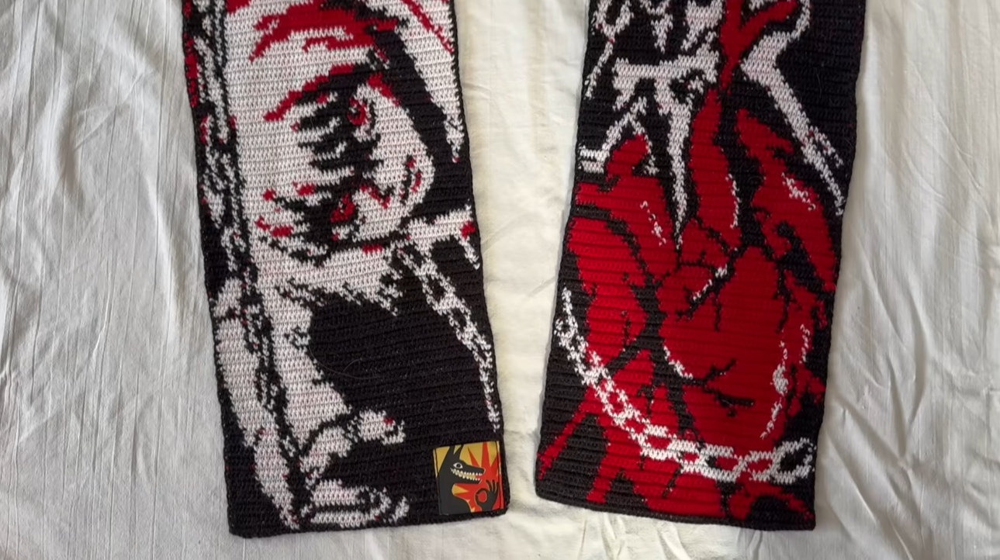

Шарф
Задача
Девушка на Новый год хотела подарить своей подруге шарф с оригинальным рисунком и заказала изделие, предварительно направив схему и обговорив размеры.
Решение
В отличии от остальных работ, здесь было не так много места для кретива, поэтому я просто связала шарф по заданному шаблону методом жаккарда из тонкой пряжи. После этого изделие было особым образом постирано, потому что без этого этапа оно считалось бы незавершенным.


Результат
Заказчица получила оригинальное изделие в срок и была очень довольна, как и её подруга, в подарок которой оно и было связано.